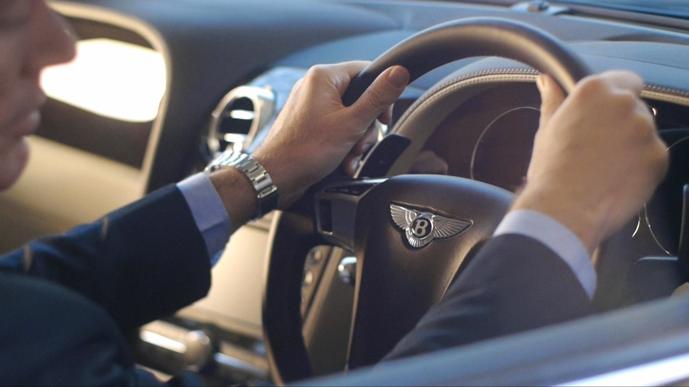

Space, time and luxury
Written By Guy Nisbett
Enjoying a luxury car, or an exotic location, should be easy. But on a busy film shoot with a complex storyboard, it can be hard to remember that. So the challenge is to find the moment, and simply enjoy what’s in front of you. Even when the 1st AD is telling you that the talent has gone missing after lunch, and you still have three locations to shoot before you lose the light.
Another challenge is finding ‘luxurious music’. One solution is to search for ‘melancholic’. I don’t know why bitter sweet sadness goes so well with luxury, but it does. Perhaps it’s the feeling that the products are achingly beautiful. Or perhaps it’s the pain of not being able to afford them. Either way, melancholic music hits the spot.

